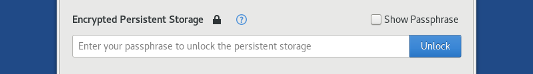

Using the Persistent Storage can have security implications in a system like Tails, which is designed to provide anonymity and leave no trace. Read our warnings about the Persistent Storage.
Unlocking the Persistent Storage
When starting Tails, in the Encrypted Persistent Storage section of the Welcome Screen, enter your passphrase and click Unlock.

Using the Persistent Storage
After you unlock the Persistent Storage, the data corresponding to each feature of the Persistent Storage is automatically available. For example:
Your personal files in the Persistent folder are accessible from Places ▸ Persistent.
Emails are available in Thunderbird and bookmarks are available in Tor Browser.
Additional software is automatically installed when starting Tails.